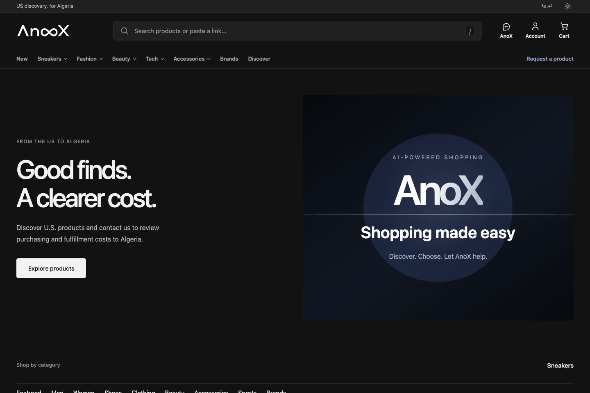
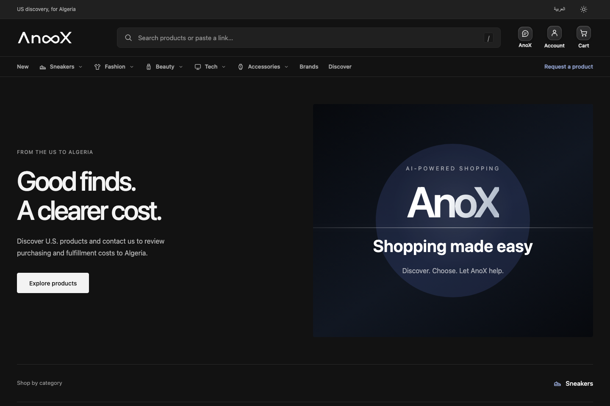

ANOX / DESIGN REVIEW / 01
Quiet detail.
Clear intention.
One original family of 35 icons. Refined geometry, a subtle glass edge, and controls that feel considered at every size.
01 / IN CONTEXT
The same storefront. A clearer visual language.
Drag the divider to compare the released baseline with the candidate. Both use identical offline sample products and accounts; no live provider, payment, or customer service is contacted.


BEFOREAFTERThe logo, typography, content layer and business flows are preserved. The utility row gains height for the 44px theme-control target.
02 / THE FAMILY
Balanced at the size you use.
These are the actual production-renderer glyphs, not a separate illustration. Category silhouettes are distinct; every stroke belongs to the same family.
03 / FEEL & FEEDBACK
Small surfaces. Deliberate feedback.
Rest / hover / focus
Use Tab to inspect the focus ring.Saved state
Click to toggle; shape and color both respond.Unavailable
Native disabled semantics remain intact.Quiet depth
A soft rim, one highlight, a restrained shadow.This review page has no connection to commerce or customer services.